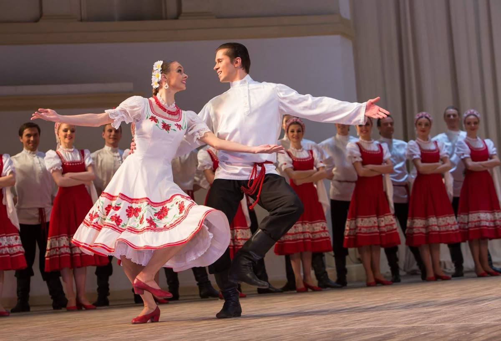
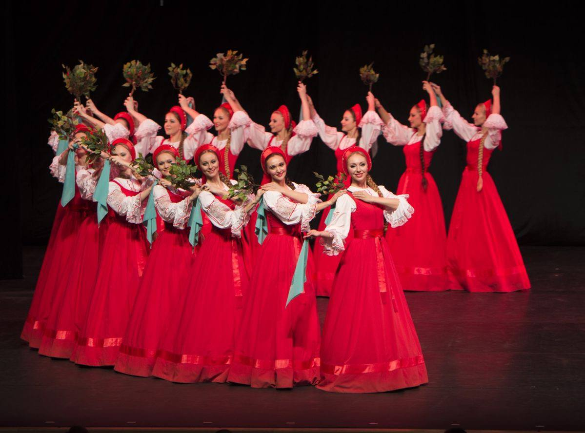
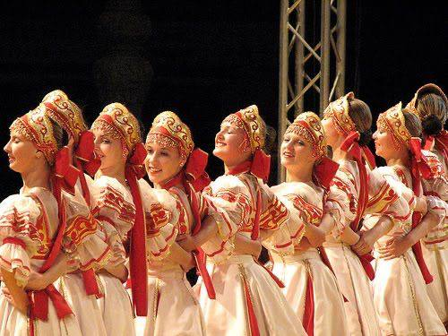

Русский народный танец
Хоровод, пляска, кадриль — танец, в котором живут песня, костюм и характер народа.


Танец как язык
Русский народный танец вырос из крестьянской жизни: календарных праздников, обрядов, гуляний и посиделок. В нём нет лишних движений — каждое что-то значит: поклон выражает уважение, круг объединяет, дробь и присядка показывают удаль.
У каждой области был свой характер танца. На Севере пляшут сдержанно и плавно, на юге России — быстро, с задором и импровизацией. Сегодня эти традиции хранят фольклорные коллективы и профессиональные ансамбли.

Немного истории
От деревенского обряда до большой сцены — четыре важные вехи.
Виды танца



Костюм
Костюм — часть танца. Широкий подол подчёркивает вращение, рукава «договаривают» движение рук, а платок становится настоящим партнёром в лирическом танце.
- Сарафан — длинное платье без рукавов, надеваемое поверх рубахи.
- Кокошник — праздничный головной убор, богато украшенный.
- Рубаха — у мужчин косоворотка с поясом-кушаком.
- Платок — и украшение, и предмет танца.
- Сапожки — с каблуком, чтобы звонко выбивать дробь.
Ансамбли
Коллективы, которые сделали народный танец сценическим искусством.
Галерея
- 1Климов А. А. Основы русского народного танца. — М.: Искусство, 1981.
- 2Ткаченко Т. С. Народный танец. — М.: Искусство, 1967.
- 3Устинова Т. А. Беречь красоту русского танца. — М.: Советская Россия, 1959.
- 4Заикин Н. И., Заикина Н. А. Областные особенности русского народного танца. — Орёл, 1999.
- 5Моисеев И. А. Я вспоминаю… Гастроль длиною в жизнь. — М.: Согласие, 1996.
Источники фото
Откуда взяты изображения на сайте.
- 1Pinterest — pin.it/6S2rpX8VI
- 2Pinterest — pin.it/vv3UIpQiK
- 3Pinterest — pin.it/7J1cn4KT8
- 4Одноактный балет «Ночь на Лысой горе» на концерте в Старом Осколе. Фото @gargoliga
- 5Pinterest — pin.it/Uj85otHwk
- 6Pinterest — pin.it/74Oi0nhnO
- 7Pinterest — pin.it/7LUtq5fAQ
- 8Pinterest — pin.it/3bV9BFsax
- 9Фото из личного архива